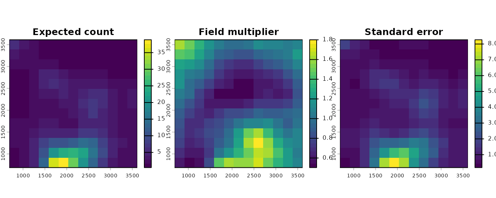
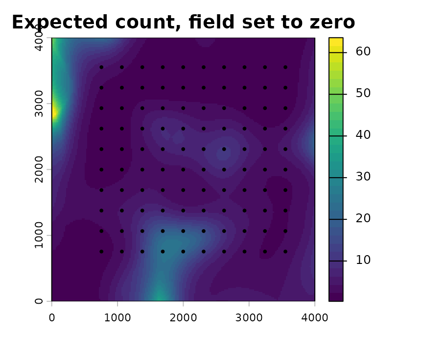

11. Account for Spatial Autocorrelation with a Spatial Field
Bill Peterman
Source:vignettes/v11-spatial-fields.Rmd
v11-spatial-fields.RmdWhat this vignette covers
Counts from neighboring survey points often resemble each other more than the landscape covariates can explain. This leftover pattern is residual spatial autocorrelation. A model that ignores it tends to report standard errors that are too small, and it can distort the estimated scale of effect. This vignette shows how to estimate scales of effect while a spatial field in the regression model absorbs that pattern.
You will simulate counts with a known scale of effect and a known
field, fit the model with and without the field, read both sets of
estimates, and predict at survey points, at new locations, and across a
map. Read
vignette("v01-quickstart", package = "multiScaleR") first.
The field is fitted by glmmTMB, a package that
multiScaleR suggests but does not install, and the code
below runs only when glmmTMB is available.
Know what a spatial field does
A spatial field is a random effect with one value per survey location, where values at nearby locations are correlated and the correlation fades with distance. It stands in for spatially structured drivers that you did not measure. Add one when the residuals of an ordinary model are similar at neighboring points.
The field has a distance parameter of its own, the range. Do not confuse it with the scale of effect.
| Scale of effect (sigma) | Field range | |
|---|---|---|
| What it describes | How far the landscape around a point influences the response | How far apart two points can be while their unexplained variation stays correlated |
| What it acts on | One landscape covariate | The part of the response the covariates leave unexplained |
| How to treat it | The ecological result. Report it as an effective distance | A nuisance parameter that describes the residual pattern |
Simulate counts with a known field
The counts bundled with the package were simulated without a spatial
field, so they cannot show what a field changes. This example keeps the
bundled landscape and survey points and simulates new counts. The true
scales of effect stay at 250 m for land1 and 500 m for
land2. The field has a standard deviation of 0.6 on the log
scale and a range of 800 m.
data("surv_pts")
pts <- vect(surv_pts) # 100 survey points
xy <- crds(pts) # their coordinates, in meters
land_rast <- rast(system.file("extdata", "landscape.tif",
package = "multiScaleR"))
# Landscape covariates smoothed at the true scales, then standardized
truth <- kernel_scale.raster(land_rast[[c("land1", "land2")]],
sigma = c(250, 500), kernel = "gaussian",
verbose = FALSE)
x_true <- scale(as.matrix(extract(truth, pts, ID = FALSE)))
set.seed(1)
# The field: correlation between two points is exp(-distance / 800)
d_mat <- as.matrix(dist(xy))
field <- drop(t(chol(0.6^2 * exp(-d_mat / 800))) %*% rnorm(nrow(xy)))
site <- rnorm(nrow(xy)) # a covariate measured at the survey point
# Log expected count: intercept, site effect, landscape effects, and the field
log_mu <- 1 + 0.3 * site - 0.5 * x_true[, "land1"] +
0.7 * x_true[, "land2"] + field
dat <- data.frame(counts = rpois(nrow(xy), exp(log_mu)), site = site)Fit the model without a field
Start with the ordinary workflow from the Quick Start, which gives the baseline for the comparison.
# bin = TRUE stores distance-binned summaries, which speed up every refit
inputs <- kernel_prep(pts = pts, raster_stack = land_rast, max_D = 1700,
kernel = "gaussian", bin = TRUE, verbose = FALSE)
df <- data.frame(dat, inputs$kernel_dat)
start_glm <- glm(counts ~ site + land1 + land2, family = poisson(), data = df)
fit_glm <- multiScale_optim(start_glm, inputs, n_cores = 1, verbose = FALSE)Add a spatial field
glmmTMB writes a spatial field as a covariance term in
the model formula. The term needs two columns. The first holds the
coordinates of each row, built with glmmTMB::numFactor().
The second is a grouping factor with a single level, which tells
glmmTMB that every point belongs to one shared field.
df$pos <- glmmTMB::numFactor(xy[, 1], xy[, 2]) # coordinates, in meters
df$grp <- factor(rep("all", nrow(df))) # one field for all points
# exp() here is glmmTMB's exponential covariance, not the exponential function
start_field <- glmmTMB::glmmTMB(
counts ~ site + land1 + land2 + exp(pos + 0 | grp),
family = poisson(), data = df,
start = list(theta = c(log(0.5), log(500))) # log field SD, log range (m)
)Choosing start: Supply starting values
for the field. By default glmmTMB starts the range at one
coordinate unit, here 1 m. No two survey points are correlated at that
range, so the optimizer cannot move and the fit fails its convergence
check. multiScale_optim() then returns the starting sigma
values with no standard errors, and it warns that the search never left
its start. Start the range at or above the spacing between neighboring
points, which is about 310 m here.
Use projected coordinates in the same distance units as the raster, because the range is estimated in those units and nothing is rescaled for you.
Pass the starting model to multiScale_optim() as usual.
The default backend = "refit" refits the
glmmTMB model at each candidate scale, so the field is
estimated again every time the kernel-weighted covariates change.
fit_field <- multiScale_optim(start_field, inputs, n_cores = 1, verbose = FALSE)This search took about 45 seconds, against less than one second without the field.
Read the scales, the coefficients, and the field
s_glm <- summary(fit_glm)$opt_scale # sigma, SE, 95% CI (m)
s_field <- summary(fit_field)$opt_scale
b_glm <- summary(fit_glm$opt_mod)$coefficients # log-scale estimates
b_field <- summary(fit_field$opt_mod)$coefficients$cond
compare <- data.frame(
Parameter = c("sigma, land1 (m)", "sigma, land2 (m)", "intercept",
"effect of site", "effect of land1", "effect of land2"),
Truth = c(250, 500, 1, 0.3, -0.5, 0.7),
No_field = c(s_glm[, "Mean"], b_glm[, "Estimate"]),
SE = c(s_glm[, "SE"], b_glm[, "Std. Error"]),
Field = c(s_field[, "Mean"], b_field[, "Estimate"]),
SE_field = c(s_field[, "SE"], b_field[, "Std. Error"]))
knitr::kable(compare, digits = 2, row.names = FALSE,
col.names = c("Parameter", "Truth", "No field", "SE",
"With field", "SE"))| Parameter | Truth | No field | SE | With field | SE |
|---|---|---|---|---|---|
| sigma, land1 (m) | 250.0 | 632.35 | 69.01 | 325.45 | 48.81 |
| sigma, land2 (m) | 500.0 | 587.77 | 39.89 | 501.35 | 57.18 |
| intercept | 1.0 | 1.05 | 0.07 | 1.14 | 0.20 |
| effect of site | 0.3 | 0.43 | 0.05 | 0.40 | 0.07 |
| effect of land1 | -0.5 | -0.74 | 0.06 | -0.57 | 0.10 |
| effect of land2 | 0.7 | 0.99 | 0.05 | 0.71 | 0.12 |
How to read the table: The first two rows are the
scales of effect, in meters. Without the field, the land1
estimate is 632 m and its 95% interval (495 to 769 m) misses the true
250 m. With the field, the estimate is 325 m and the interval (229 to
422 m) contains it. The remaining rows are on the log scale. The model
without a field overstates both landscape effects. It estimates that one
standard deviation of land2 multiplies the expected count
by 2.69, where the truth is 2.01 and the field model gives 2.03. Because
the field model no longer treats neighboring counts as independent, it
also reports a larger standard error for every coefficient.
# The field parameters, back-transformed from the log scale
field_par <- exp(glmmTMB::getME(fit_field$opt_mod, "theta"))
names(field_par) <- c("field SD (log scale)", "range (m)")
round(field_par, 2)
#> field SD (log scale) range (m)
#> 0.45 711.06
# K counts the regression coefficients, the field parameters, and the two sigmas
aic_tab(list(fit_glm, fit_field), mod_names = c("No field", "With field"))
#>
#> Model selection based on AICc:
#>
#> K AICc Delta_AICc AICcWt Cum.Wt LL
#> With field 8 430.84 0.00 1 1 -206.63
#> No field 6 457.46 26.62 0 1 -222.28How to read the output: The field standard deviation
is on the scale of the linear predictor, the log expected count. An
estimate of 0.45 means that a location one standard deviation above
average has an expected count 1.57 times that of an average location
with the same covariates. The range is in meters. Correlation between
two locations is exp(-distance / range). With a range of
711 m it is 0.65 between neighboring survey points and falls to 0.37 at
711 m. The data were simulated with a standard deviation of 0.6 and a
range of 800 m. In the AICc table, lower values mean better support, and
the field model wins by a wide margin. Its K is two larger
because it adds the field standard deviation and the range.
What this means for your study. One simulated data set shows what a field can change. It does not show that a field always improves a scale estimate. When the bundled counts, which have no residual spatial pattern, were fitted with the same field term, the field standard deviation was 0.14 and the scales barely moved (240 and 499 m, against 238 and 500 m without it). Fit both models and compare them.
Predict at the survey points
predict() returns the expected count. For a model with a
field, you choose whether the prediction includes the estimated field
value at each location.
# Default: includes the estimated field value at each survey point
p_field <- predict(fit_field, se.fit = TRUE, uncertainty = "conditional")
# re.form = NA: sets the field to zero, leaving the covariate effects only
p_zero <- predict(fit_field, re.form = NA)
round(head(data.frame(observed = df$counts,
with_field = as.numeric(p_field$fit),
se = as.numeric(p_field$se.fit),
field_zero = as.numeric(p_zero)), 5), 2)
#> observed with_field se field_zero
#> 1 1 1.15 0.40 1.11
#> 2 2 2.98 0.85 2.81
#> 3 7 5.18 1.35 5.77
#> 4 14 11.82 2.53 6.79
#> 5 3 2.22 0.69 2.26
# The estimated field at the survey points against the simulated one
cor(log(as.numeric(p_field$fit) / as.numeric(p_zero)), field)
#> [1] 0.7565847How to read the output: with_field is
the expected count at that survey point, given what the counts revealed
about the field there. field_zero is the expected count for
the same covariate values at a location where the field equals zero.
Treat it as a reference value, because it is not an average over the
field. The ratio of the two columns is the field’s multiplier at that
point, and its log tracks the simulated field with a correlation of
0.76.
The standard error describes the expected count. It holds the
estimated scales of effect fixed and adds no observation noise. Request
it with se.fit = TRUE and
uncertainty = "conditional". Confidence limits
(interval = "confidence") and joint uncertainty are not
available for these fits, and predict() stops with an error
if you ask for them. The prediction_contract attribute of
each result records whether the field was included or set to zero.
Predict at new locations and map the result
A new location needs its own kernel inputs and its own coordinates.
Prepare both, then set allow.new.levels = TRUE so that
glmmTMB accepts positions it did not see during fitting.
Without that argument the call stops with an error that names it and the
alternative, re.form = NA. At a new position, the field
value is predicted from the field at the survey points, weighted by the
fitted correlation. Far from every survey point, the prediction
therefore returns to the zero-field value.
# A 225 m grid of new locations inside the surveyed area
grid_xy <- as.matrix(expand.grid(x = seq(800, 3500, by = 225),
y = seq(800, 3500, by = 225)))
grid_inputs <- kernel_prep(pts = vect(grid_xy, type = "points"),
raster_stack = land_rast, max_D = 1700,
kernel = "gaussian", bin = TRUE, verbose = FALSE)
# One row per new location: site covariate, coordinates, and the field group
grid_dat <- data.frame(site = 0,
pos = glmmTMB::numFactor(grid_xy[, 1], grid_xy[, 2]),
grp = factor("all"),
row.names = rownames(grid_inputs$kernel_dat))
with_field <- predict(fit_field, grid_dat, grid_inputs,
allow.new.levels = TRUE, # accept new positions
se.fit = TRUE, uncertainty = "conditional")
no_field <- predict(fit_field, grid_dat, grid_inputs, re.form = NA)
grid_map <- rast(data.frame(
grid_xy,
expected = as.numeric(with_field$fit),
multiplier = as.numeric(with_field$fit) / as.numeric(no_field),
se = as.numeric(with_field$se.fit)), type = "xyz")
plot(grid_map, nc = 3,
main = c("Expected count", "Field multiplier", "Standard error"))
Predictions on a 225 m grid inside the surveyed area.
How to read these plots: The left panel is the
expected count per survey when site is zero, including the
predicted field. The middle panel isolates the field. A value above 1
marks an area where counts run higher than the landscape covariates
predict, and a value below 1 marks the opposite. The right panel is the
standard error of the expected count, in the same units. Prediction time
climbs steeply with the number of new positions (the 169 here take a few
seconds), so keep the grid coarse.
A map with the field set to zero can cover every raster cell. Prepare
the layers with kernel_scale.raster(), setting
scale_center = TRUE and match_buffer = TRUE,
then call predict() with re.form = NA. This
route requires a raster with a projected coordinate reference system. It
also expects every variable in the model formula, so pass one fitted
position and the group label through site_values. With
re.form = NA they do not change the result.
# The bundled raster has no CRS. Declare a projected one, in meters.
map_rast <- land_rast
crs(map_rast) <- "EPSG:32617"
# Landscape layers at the estimated scales, with site held at zero. The field
# columns are placeholders that re.form = NA ignores.
layers <- kernel_scale.raster(
map_rast, multiScaleR = fit_field,
scale_center = TRUE, match_buffer = TRUE, clamp = TRUE, verbose = FALSE,
site_values = list(site = 0, pos = as.character(df$pos[1]), grp = "all"))
map_zero <- predict(fit_field, layers, re.form = NA)
plot(map_zero, main = "Expected count, field set to zero")
points(pts, pch = 19, cex = 0.4)
Expected count from the covariate effects alone, with the field set to zero.
How to read this plot: Each cell holds the expected count that the landscape covariates alone predict. Use this map to show the landscape effect, and use the grid above when you want the best prediction for a place. Cells near the border lie outside the surveyed area, so read them with caution.
Current restrictions
Support for spatial fields is experimental. The package checks that
its predictions match those of glmmTMB. It has not yet
evaluated how well scales of effect are recovered, or whether intervals
reach their nominal coverage, when a field is present.
| Feature | Checked and supported | Not supported, or not checked |
|---|---|---|
| Fitting |
multiScale_optim() with the default
backend = "refit"
|
The profile_glm, joint_nb2,
and joint_mixed backends |
| Response | Gaussian. Poisson, negative binomial
(nbinom2), and Gamma with a log link. Binomial with a logit
link |
Other families and links |
| Field | One field shared by all rows, with exp(),
gau(), or mat() covariance |
Several fields, or a field combined with other random effects |
| Coordinates | Projected, in the distance units of the raster | Longitude and latitude. Raster prediction stops without a projected CRS |
| Uncertainty | Sigma standard errors and intervals from
summary(). Standard errors for predictions, with scales
held fixed |
Confidence limits and joint uncertainty from
predict()
|
| Held-out evaluation |
cross_validate_field() for Gaussian
responses with exp() or gau() covariance. It
requires glmmTMB 1.1.14 and TMB 1.9.25 |
Count and binomial responses |
cross_validate_field() fits a field model to part of the
data and scores its predictions for the rest, keeping all surveys from
one location in the same fold. See ?cross_validate_field
and
vignette("v08-cross-validation", package = "multiScaleR").
Quick reference
# 1. Prepare kernel inputs and fit a baseline model without a field
inputs <- kernel_prep(pts = pts, raster_stack = land_rast, max_D = 1700,
kernel = "gaussian", bin = TRUE)
df <- data.frame(dat, inputs$kernel_dat)
start_glm <- glm(counts ~ site + land1 + land2, family = poisson(), data = df)
fit_glm <- multiScale_optim(start_glm, inputs, n_cores = 1)
# 2. Add a spatial field on the survey coordinates and estimate the scales
df$pos <- glmmTMB::numFactor(xy[, 1], xy[, 2]) # coordinates, in meters
df$grp <- factor(rep("all", nrow(df))) # one field for all points
start_field <- glmmTMB::glmmTMB(
counts ~ site + land1 + land2 + exp(pos + 0 | grp),
family = poisson(), data = df,
start = list(theta = c(log(0.5), log(500)))) # log field SD, log range (m)
fit_field <- multiScale_optim(start_field, inputs, n_cores = 1)
# 3. Read the results
summary(fit_field)$opt_scale # sigma, SE, interval (m)
summary(fit_field$opt_mod)$coefficients$cond # log-scale coefficients
exp(glmmTMB::getME(fit_field$opt_mod, "theta")) # field SD, range (m)
aic_tab(list(fit_glm, fit_field), mod_names = c("No field", "With field"))
# 4. Predict at the survey points, then at new locations
predict(fit_field, se.fit = TRUE, uncertainty = "conditional") # with the field
predict(fit_field, re.form = NA) # field at zero
predict(fit_field, grid_dat, grid_inputs, allow.new.levels = TRUE,
se.fit = TRUE, uncertainty = "conditional") # grid_dat: site, pos, grp
# 5. Map the covariate effects with the field set to zero
layers <- kernel_scale.raster(
map_rast, multiScaleR = fit_field, # map_rast has a projected CRS
scale_center = TRUE, match_buffer = TRUE, clamp = TRUE,
site_values = list(site = 0, pos = as.character(df$pos[1]), grp = "all"))
map_zero <- predict(fit_field, layers, re.form = NA)Summary of key functions
| Function | Purpose |
|---|---|
glmmTMB::numFactor() |
Store survey coordinates in the form a
glmmTMB covariance term needs |
glmmTMB::glmmTMB() |
Fit the starting model with an exp(),
gau(), or mat() spatial field |
multiScale_optim() |
Estimate the scales of effect, refitting the field at each candidate scale |
summary(), aic_tab()
|
Report sigma with its interval, and compare models with and without a field |
predict() |
Expected response with the field (the default) or with
the field at zero (re.form = NA) |
kernel_scale.raster() |
Apply the fitted kernels to a raster for mapping |
cross_validate_field() |
Score held-out predictions for a Gaussian response with a field |
See also
-
vignette("v01-quickstart", package = "multiScaleR"), the core workflow and how to read a fitted model. -
vignette("v09-estimates-and-intervals", package = "multiScaleR"), what each interval includes and what it leaves out. -
vignette("v08-cross-validation", package = "multiScaleR"), comparing models by how well they predict held-out observations. -
vignette("v03-map-predictions", package = "multiScaleR"), mapping beyond the conditions you sampled. - The help page
?"multiScaleR-glossary"defines the terms used in these vignettes.